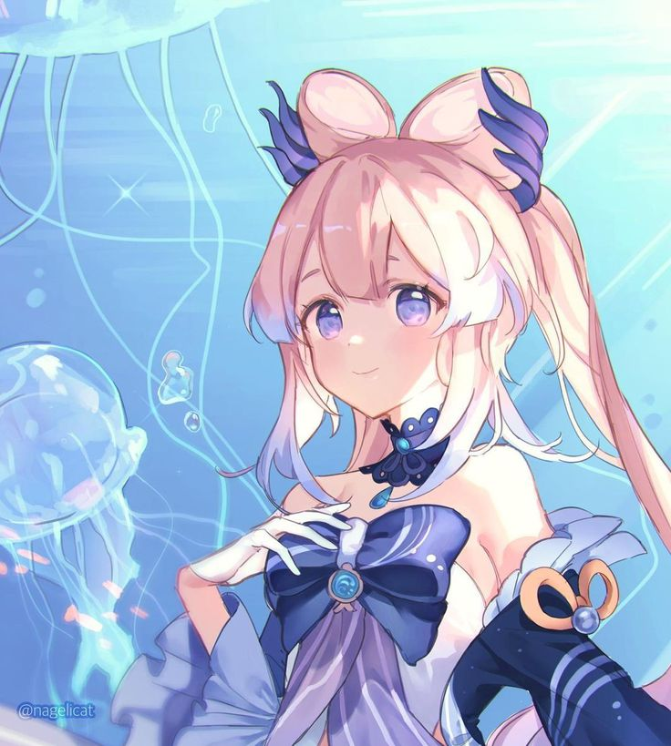

Kokomi



Sangomiya Kokomi é uma personagem de suporte com excelentes habilidades de cura. Sua Habilidade
Elemental, "Bake-Kurage", permite que ela cure continuamente os membros da equipe ao redor, enquanto
causa
Dano
Hydro em uma AdE aos inimigos.

Mondstadt - A Cidade da Liberdade
Mondstadt é uma das sete nações de Teyvat, conhecida como a Cidade da Liberdade.
Governada pelos Ventos de Anemo e protegida pelo Arconte Barbatos, Mondstadt se destaca por sua
beleza
natural,
com vastos campos e montanhas, além de uma cultura rica que celebra a música e a liberdade.
A cidade é o lar de personagens icônicos, como o Cavaleiro de Favonius e o poeta bardo Venti.
Mondstadt oferece aos jogadores uma jornada cheia de aventuras e exploração, com templos escondidos,
missões de resgate e a misteriosa Ordem do Abismo ameaçando a paz da região.
Natlan - A Nação da Guerra

Natlan é uma das sete nações de Teyvat em Genshin Impact, conhecida por ser governada pela
Arconte Pyro. Essa nação é caracterizada pelo calor e pela paixão de seu povo, que valoriza a
liberdade e o espírito de luta. Natlan também tem uma forte conexão com o fogo e a natureza
vulcânica da região.
A Arconte Pyro - Mavuika
Mavuika, a Arconte Pyro de Natlan, é uma deusa feroz e guerreira. Sua personalidade é marcada
pela paixão e pelo espírito indomável de batalha. Ela encoraja o povo de Natlan a lutar por
aquilo que acreditam, e é conhecida por valorizar a liberdade acima de tudo.

Embora ainda não completamente explorada no jogo, Natlan promete ser um território cheio de aventuras
e desafios, especialmente com sua conexão ao elemento Pyro e à luta constante de seus habitantes
para superar qualquer obstáculo.